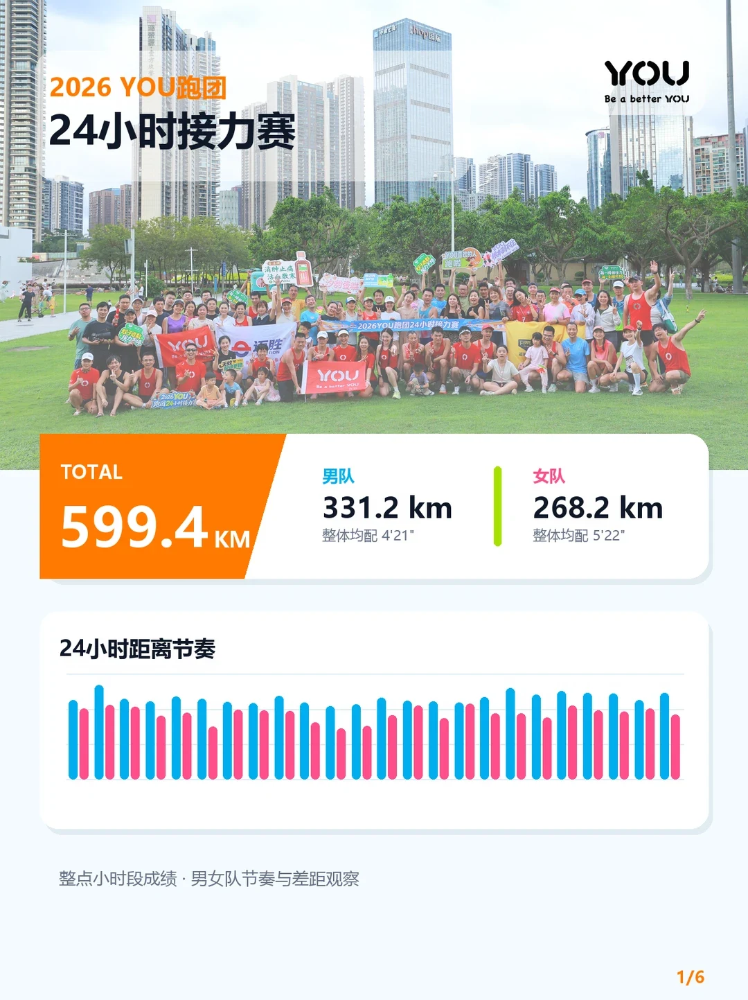
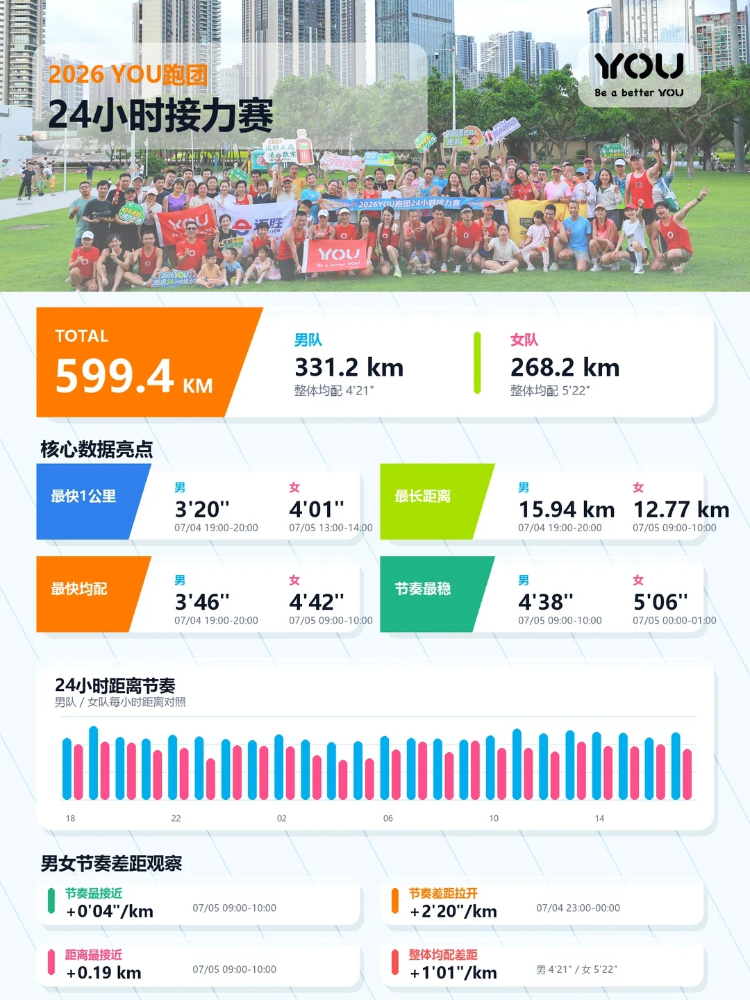
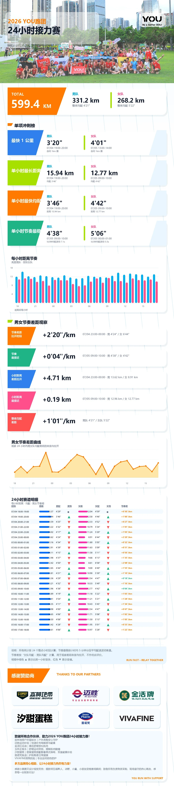

24小时接力，跑出599.4公里
599.4公里，这是YOU跑团发布的2026年24小时接力总里程。其中男队331.2公里，女队268.2公里，队员们从黄昏跑到次日傍晚。

把每一棒接起来
跑团在活动后发布了数据图文，记录各时段的跑步节奏。24小时里既有夜间的奔跑，也有白天的接续，最后汇成这份团队记录。
原帖还逐一感谢了补给支持、视觉设计、摄影和现场服务的伙伴。镜头之外，志愿者与热心跑友一起参与了这场接力。

留下完整的数据记录
原帖的长图保留在下方，可点开查看各时段数据与活动记录。相关里程按跑团发布的数据整理。
